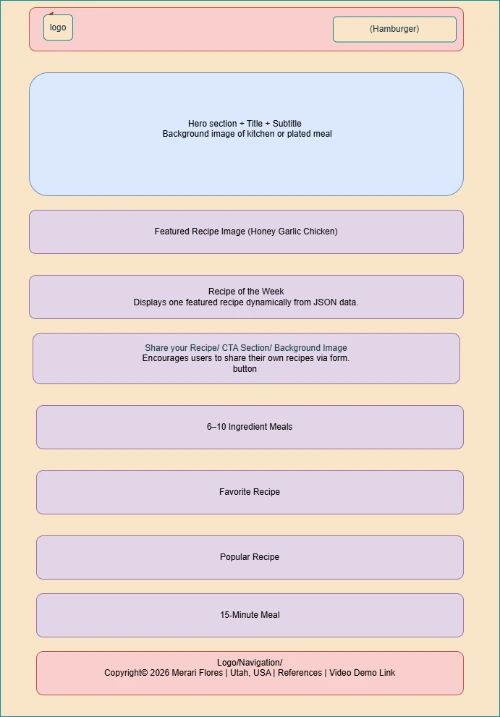
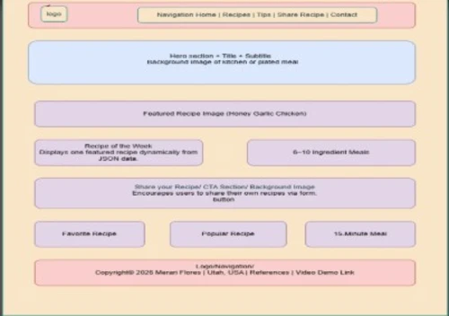

Site Name
5–10 Ingredient Meals
This name clearly communicates the purpose of the website: simple, budget‑friendly meals that use only 5–10 ingredients. It is memorable, descriptive, and aligns with the goal of helping busy families cook affordable meals with minimal prep.
Site Purpose
The purpose of this website is to provide quick, affordable recipes that anyone can make using 5–10 ingredients. Each recipe includes prep time, ingredient list, and step‑by‑step instructions. Visitors can browse meal ideas, read cooking tips, and submit their own recipes through a form. The site will include dynamic JavaScript features such as JSON data, modals, local storage, and interactive recipe displays.
Scenarios
- What can I cook tonight with only a few ingredients I already have at home?
- How can I save money while still preparing healthy meals for my family?
- Where can I submit my own simple recipe to share with others?
- What are some quick meal ideas I can make in under 20 minutes?
Color Scheme
Primary Colors
Deep Navy (#003049) – Used for headings, navigation, and structural elements.
Warm Orange (#F77F00) – Used for accents, buttons, and section highlights.
Supporting Colors
Strong Red (#D62828) – Used sparingly for important callouts and recipe badges.
Golden Yellow (#FCBF49) – Used for subtle highlights, hover states, and accents.
Cool Gray (#6C757D) – Used for body text and neutral UI elements.
Typography
Poppins – Used for headings and navigation.
Roboto – Used for body text and paragraphs.
Caveat – Used sparingly for handwritten‑style accents (e.g., recipe titles or quotes).
Wireframes
Mobile View

Desktop View

These wireframes represent the planned layout for the home page. The mobile version includes a stacked layout with a hamburger menu, while the desktop version uses a multi‑column layout with a horizontal navigation bar.